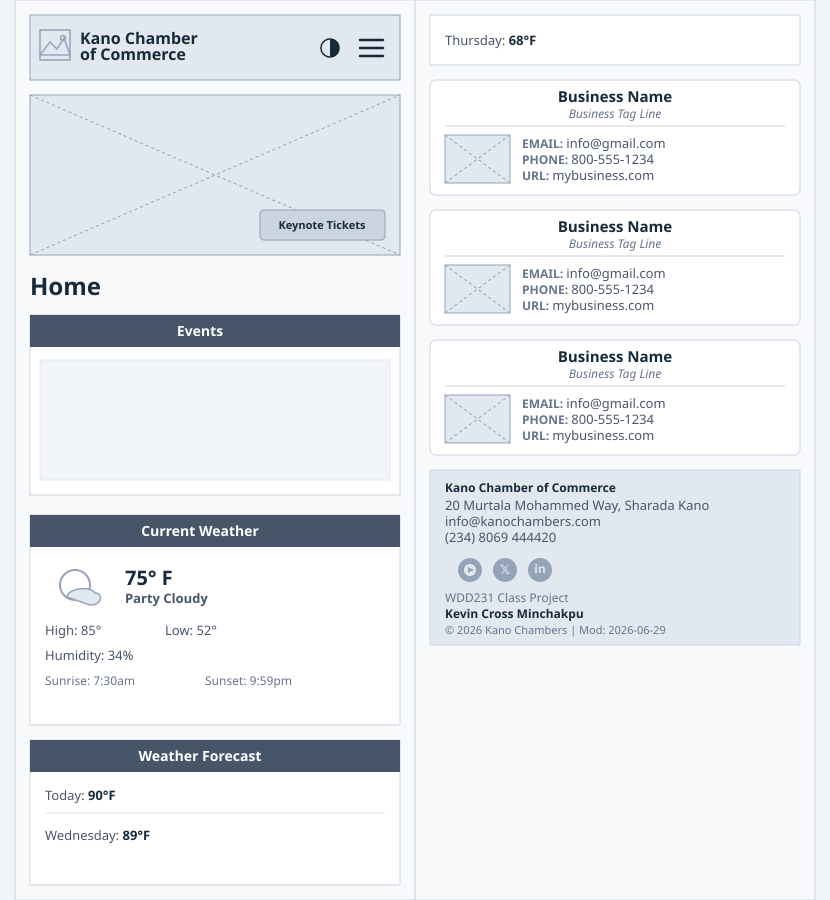
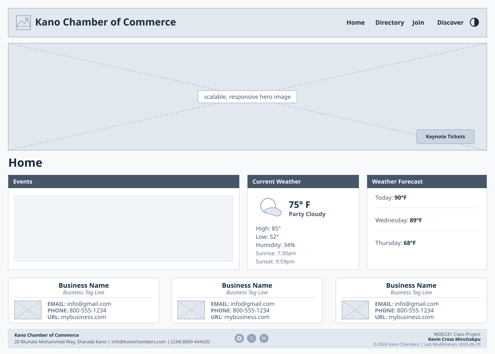

Overview & Purpose
Site Name: Kano Chamber of Commerce
Site Purpose: This website will serve as a resource hub for businesses in the city of Kano. The site will provide information on local events, host networking opportunities, create business directories, and encourage local shopping. It aims to promote local economic growth, support local businesses, and foster a sense of community between the businesses.
Target Market & User Personas
Target Market: Business owners and patrons in the city of Kano and surrounding areas.
User Personas
- Small Business Owner (Aliko): A 35-year-old entrepreneur who owns a local shop. He looks for networking opportunities, business resources, and marketing support to help grow his business.
- Corporate Executive (Dangote): A 67-year-old executive at a large company looking for partnership opportunities, economic development resources, and networking.
- The New Resident (Maryamu): Recently moved into the community and looks to learn more about services, business directories, and event calendars available in the area.
Site Architecture & Pages
The site architecture map includes core requirements split across targeted views:
Home: Attention-grabbing info, community info, weather, calls to action, and business spotlights.
Discover: Locale history, current demographics, an image montage, and current events.
Directory: A flexible layout grid listing local member businesses and organizations.
Join: Membership level descriptions (Non-Profit, Silver, Gold) and an application form.
Design Brief (Color Scheme & Typography)
| Element | Selection / Value | Preview |
|---|---|---|
| Primary Color | #172A3A (Deep Space Blue) |
|
| Secondary Color | #E6F14A (Lemon Lime) |
|
| Background Color | #f8f9fa (Light Off-White Canvas) |
|
| Text Color | #212529 (Dark Charcoal Dark Neutral) |
|
| Font Family | Play & Pliant, sans-serif | Abc 123 |
Landing Page Wireframe
Below are the responsive structural wireframes illustrating the content block orchestration across form factors.
Mobile Wireframe

Desktop Wireframe
